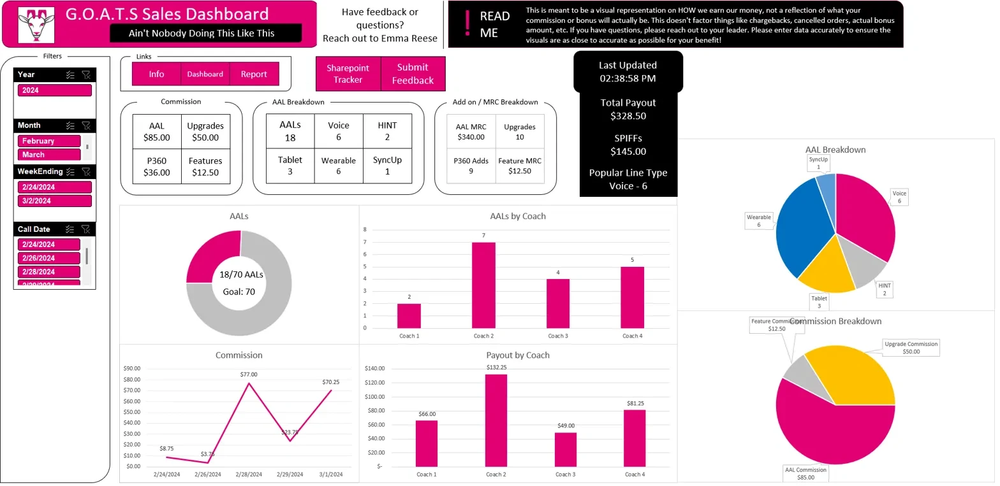
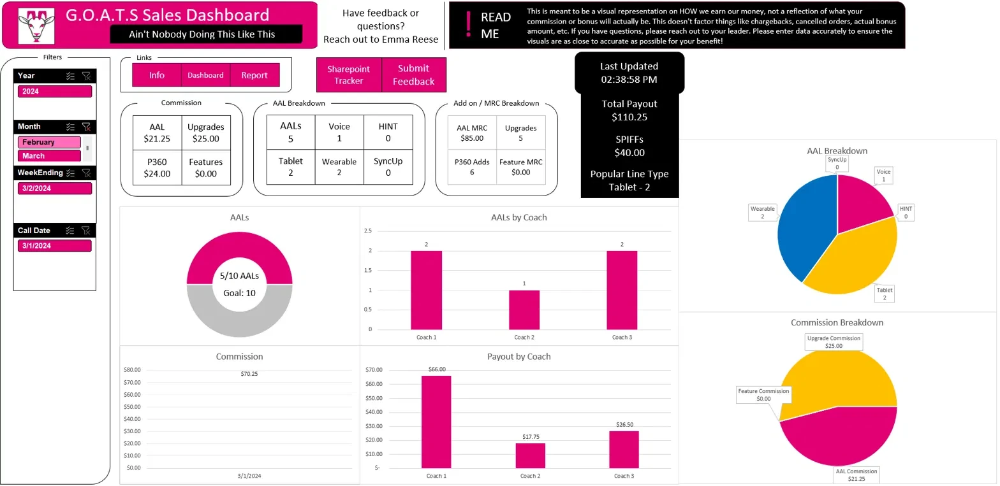

Case study
A sales dashboard that showed reps how they earn
Reps couldn’t easily see how their sales turned into incentive pay. A dashboard that made it visible, and was honest about what it couldn’t show, helped lift new lines from about 1.00 to 1.40 per 100 calls within two weeks.
New lines per 100 calls
~1.00 to ~1.40
Within two weeks, held for months
Change
~40% more
Communities using it
5
The problem
Reps earned incentive pay on new lines, upgrades, device protection, and add-on features, plus short-term bonuses (SPIFFs) that changed often. There was no convenient place to see what was currently paying, how they were doing that day, or how a sale turned into pay.
What I did
The dashboard was the visible part of a small system I built and ran.
- A SharePoint site and list. I created the site and managed its access and content. Reps logged their sales, offers, and other results in a SharePoint list, which fed the dashboard.
- The dashboard itself. I built it first in Power BI with DAX. It showed active SPIFFs, estimated payouts, and how each rep and coach compared. When senior leadership pulled the Power BI version over compensation-reporting rules, I rebuilt it in Excel with safeguards and set it to refresh automatically.
- Easy to scan. Filters for year, month, week ending, and call date; a goal tracker; new lines broken down by line type; and commission by category, coach, and day.
- Recognition in the team chat. Power Automate posted a message whenever a rep logged a sale, a collection, or a save. If one call had an offer, new lines, and a collection, the flow checked each one and built a single message with correct grammar for each part. Each part was color coded by how it went: a collections call that recovered 0% showed in red and one that recovered 100% in green, a new line showed in green, and an offer in a yellow-green.
- Same-day alerts for leaders. The same flows emailed leaders whatever they wanted to inspect, such as offers, cancellation calls, and collections. For a logged collections call, the email included the account number, past-due amount, payment, and payment-arrangement amount, so the leader could review and trend it that day.
- Built to be maintained. I designed the flows to be modular and scalable, so adding or changing something wasn’t a big job, and if something broke it was easy to trace and fix.
- Upfront about its limits. A note on the dashboard explained that it showed how pay is earned, not final payouts, which can change with chargebacks, cancellations, and returns.
I built versions for five communities and kept the dashboard running for about two years. The call-tracking systems I built later used the same approach.


The result
Within two weeks, new lines rose from about 1.00 to 1.40 per 100 calls, roughly a 40% increase, and the gain held for months. That’s a before-and-after comparison rather than a controlled test, but reps now had a clear, current picture of what a sale meant for them.
What I took from it: people act on numbers they trust. Labeling the payouts as estimates, and saying why, made the dashboard more credible, not less.
Visuals are rebuilt with made-up data and anonymized names, and no real T-Mobile data is shown. Figures in the text are approximate results.